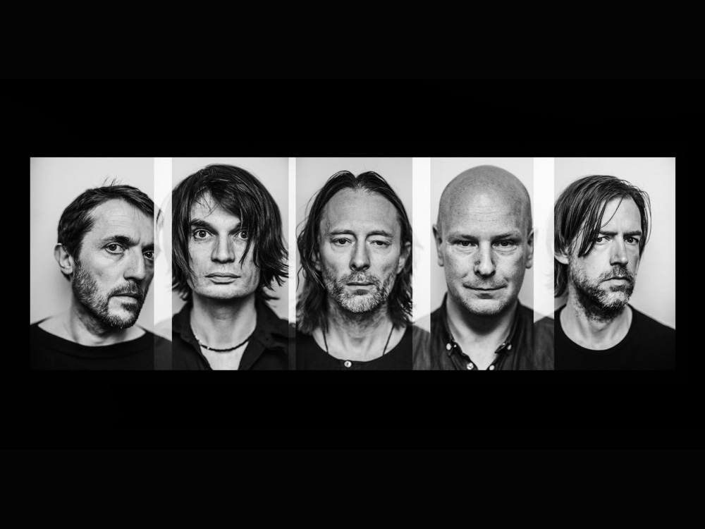
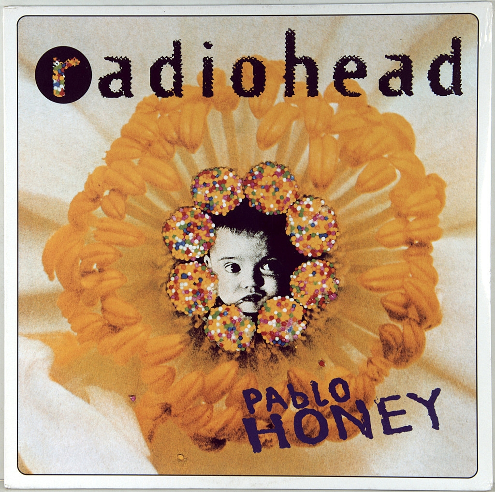

Оксфордшир, Англия · с 1985 года
Radiohead
Британская рок-группа, которая за несколько десятилетий прошла путь от гитарного альтернативного рока до электроники и оркестровых аранжировок.

О группе
Radiohead появились в городе Абингдон недалеко от Оксфорда. Будущие участники учились в одной школе и в 1985 году начали играть вместе под названием On a Friday: по пятницам у них были репетиции. В начале 1990-х группа подписала контракт с лейблом EMI и сменила название на Radiohead, взяв его из песни Talking Heads.
Первую широкую известность принёс сингл "Creep" с дебютного альбома Pablo Honey (1993). Но настоящее признание пришло позже: альбомы The Bends и особенно OK Computer сделали Radiohead одной из самых обсуждаемых групп конца 1990-х.
Группа почти не повторяет саму себя: после гитарных пластинок вышли электронные Kid A и Amnesiac, а альбом In Rainbows в 2007 году выпустили в интернете по принципу "заплатите, сколько хотите". Состав группы не менялся с самого начала, а в 2019 году Radiohead включили в Зал славы рок-н-ролла.
Участники
Том Йорк
Вокал, гитара, клавишные
Главный автор текстов и голос группы. Выпускает сольные альбомы, играл в проекте Atoms for Peace, а позже вместе с Джонни Гринвудом основал группу The Smile.
Джонни Гринвуд
Гитара, клавишные, другие инструменты
Самый младший участник и мультиинструменталист. Отвечает за многие оркестровые аранжировки группы и пишет музыку к фильмам, например к "Нефти" Пола Томаса Андерсона.
Колин Гринвуд
Бас-гитара
Старший брат Джонни. Один из основателей группы, учился в той же школе, что и остальные. Его басовые партии лежат в основе многих песен Radiohead.
Эд О'Брайен
Гитара, бэк-вокал
Известен гитарой с кучей эффектов, из-за которых она часто звучит скорее как синтезатор. В 2020 году выпустил сольный альбом под именем EOB.
Фил Селуэй
Ударные
Барабанщик группы с самого начала. Помимо Radiohead выпускает сольные альбомы, где сам и поёт.
Альбомы

1 / 9
Pablo Honey
1993
Интересные факты
Факт 1